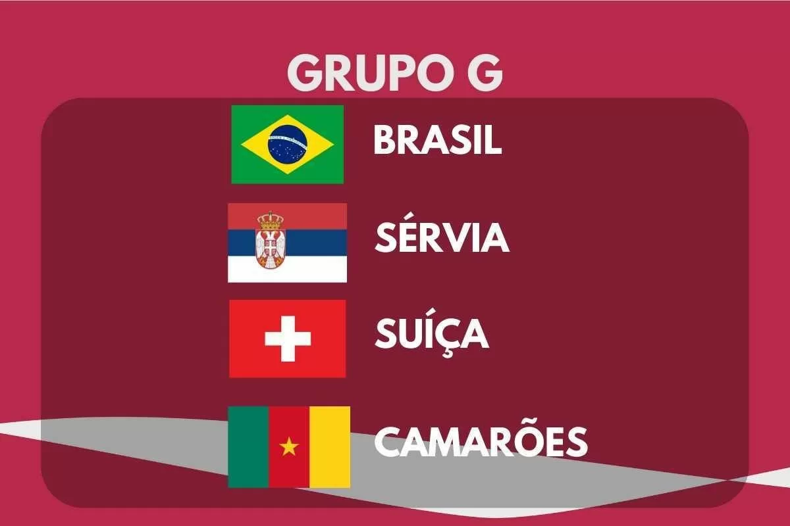

DESCRIÇÃO DO GRUPO
O Grupo G da Copa do Mundo FIFA 2022 terá sua primeira fase de jogos de 24 de novembro a 2 de dezembro de 2022. O grupo é formado por Brasil, Sérvia, Suíça e Camarões. As duas melhores equipes avançam para as oitavas de final.
|  | Encontros anteriores em Copas do Mundo | |
| Brasil x Sérvia | 1930, fase de grupos: Iugoslávia 2–1 Brasil 1950, fase de grupos: Brasil 2–0 Iugoslávia 1954, fase de grupos: Brasil 1–1 Iugoslávia 1974, fase de grupos: Brasil 0–0 Iugoslávia 2018, fase de grupos: Sérvia 0–2 Brasil |
|
| Suíça x Camarões | Nenhum encontro | |
| Brasil x Suíça* | 1950, fase de grupos: Brasil 2–2 Suíça 2018, fase de grupos: Brasil 1-1 Suíça |
|
| Camarões x Sérvia | Nenhum encontro | |
| Camarões x Brasil | 1994, fase de grupos: Brasil 3–0 Camarões 2014, fase de grupos: Camarões 1–4 Brasil |
|
| Suíça x Sérvia* | 1950, fase de grupos: Iugoslávia 3–0 Suíça 2018, fase de grupos: Sérvia 1–2 Suíça |
|
*A Sérvia participou de nove mundiais anteriores como Iugoslávia (1930–1998) e de um como Sérvia e Montenegro (2006).
EQUIPES
| Equipe | Inscrição | Confederação | Método de Qualificação | Data de Qualificação | Aparições em Copas do Mundo | Última Participação | Melhor Resultado | Ranking FIFA (Março/2022) |
| Brasil | G1 (Cabeça-de-chave) |
CONMEBOL | 1º colocado na fase única | 11 de novembro de 2021 | 22 | 2018 | Campeão (1958, 1962, 1970, 1994 e 2002) | 1º |
| Sérvia | G2 | UEFA | Vencedor do grupo A | 14 de novembro de 2021 | 13* | 2018 | Quarto lugar (1930, 1962)* | 25º |
| Suíça | G3 | UEFA | Vencedor do grupo C | 15 de novembro de 2021 | 12 | 2018 | Quartas de final (1934, 1938, 1974) | 11º |
| Camarões | G4 | CAF | Vencedor do grupo D | 29 de março de 2022 | 8 | 2014 | Quartas de Final (1990) | 37º |
*A Sérvia participou de nove mundiais anteriores como Iugoslávia (1930–1998) e de um como Sérvia e Montenegro (2006).
PARTIDAS
Todas as partidas seguem o fuso horário UTC+3 (Horário de Moscow).
Suíça x Camarões
| Data/Hora | Local |
| 24 de Novembro às 13:00 | Estádio Al Janoub, Al-Wakrah |
Brasil x Sérvia
| Data/Hora | Local |
| 24 de Novembro às 22:00 | Estádio Nacional de Lusail, Lusail |
Camarões x Sérvia
| Data/Hora | Local |
| 28 de Novembro às 13:00 | Estádio Al Janoub, Al-Wakrah |
Brasil x Suíça
| Data/Hora | Local |
| 28 de Novembro às 19:00 | Estádio 947 (Ras Abu Aboud), Doha |
Sérvia x Suíça
| Data/Hora | Local |
| 02 de Dezembro às 22:00 | Estádio 947 (Ras Abu Aboud), Doha |
Camarões x Brasil
| Data/Hora | Local |
| 02 de Dezembro às 22:00 | Estádio Nacional de Lusail, Lusail |
CLASSIFICAÇÃO
| 1º Colocado | 2º Colocado |
| Enfrenta o 2º Colocado do Grupo H, nas Oitavas de Final | Enfrenta o 1º Colocado do Grupo H, nas Oitavas de Final |